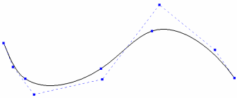

Surface construction overview
Solid Edge provides two distinct 3D modeling styles: solid modeling and surface construction.
Many surface construction features require you to define cross section and guide curves. You can define cross section and guide curves using analytic elements or B-spline curves.
An analytic element can consist of:
-
A 2D element: Line, arc, circle, ellipse, parabola, or hyperbola.
-
A derived element: such as the intersection of a cone and a plane.
-
A 3D element: a cube, sphere, cylinder, cone, or torus.
A b-spline element can consist of:
-
A 2D element, such as a B-spline curve.
-
A derived element, such as the intersection of two non-planar surfaces.
-
A 3D element, such as a 3D B-spline curve or free-form surface.
A spline was originally a tool made from wood or thin metal which was used to draw a curve through points.
